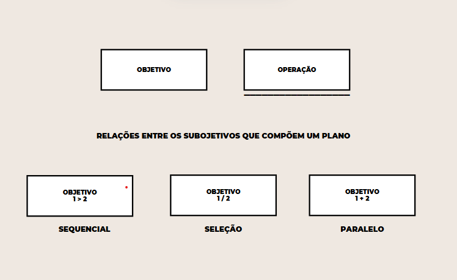
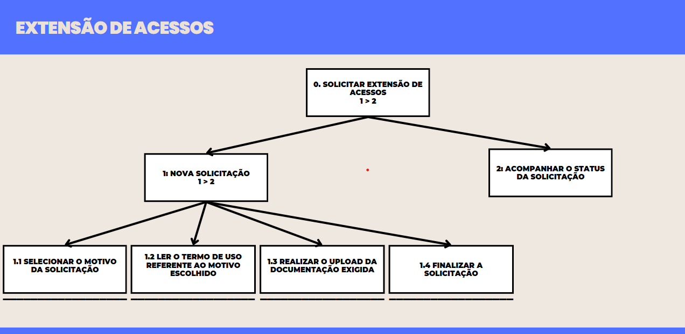
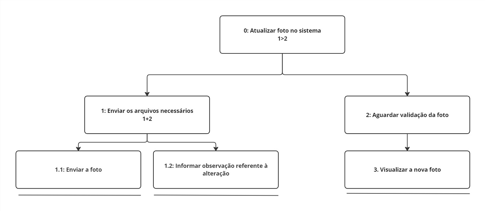
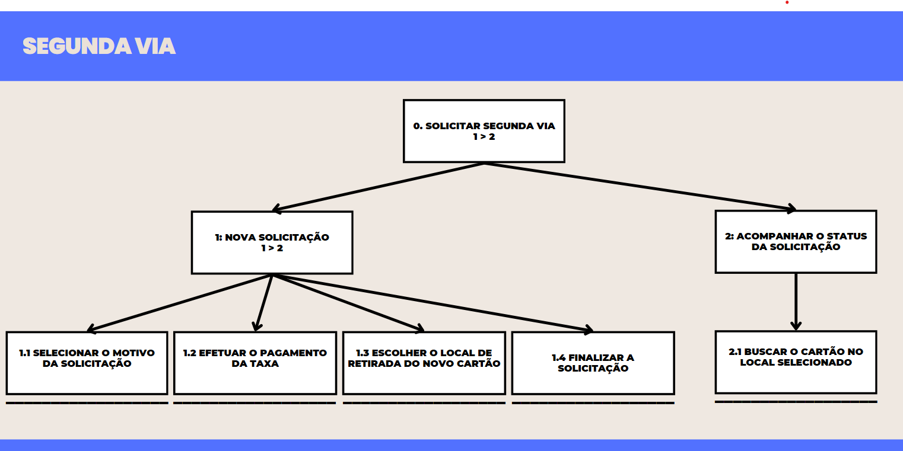
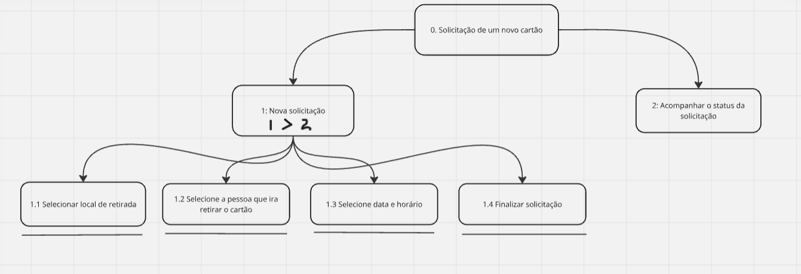

Análise Hierárquica de Tarefas (HTA)
Introdução
A Análise Hierárquica de Tarefas (HTA) é um método de análise de tarefas que visa representar e decompor uma tarefa complexa em uma hierarquia de objetivos, subobjetivos e operações, a fim de facilitar a compreensão de como um usuário realiza uma tarefa e permitir que sejam identificados pontos problemáticos e de melhoria. A HTA é amplamente utilizada em diversos contextos, como no desenvolvimento de produtos, serviços e na melhoria de processos. Ela pode ser representada por uma tabela, ou por um diagrama, com a notação conforme a figura 1.
Figura 1 - Notação diagrama HTA.

Fonte: BARBOSA e SILVA, 2011.
Análises Realizadas:
No que diz respeito às tarefas para análise com o método HTA, foram escolhidos alguns cenários para serem descritos com esse método, como poderemos ver abaixo:
Cenário 2: Extensão de Acessos
Nessa tarefa, o usuário possui o objetivo fazer uma solicitação de extensão de acessos do seu cartão do passe livre estudantil. A figura 1 apresenta o diagrama HTA relativa a tarefa, já a tabela 1 representa o mesmo HTA em tabela
Figura 2 - Diagrama HTA de Extensão de Acessos.

Fonte: Breno Fernandes.
Tabela 1 - HTA de Extensão de Acessos.
| Objetivos / Operações | Problemas e Recomendações |
|---|---|
| 0. Solicitar Extensão de Acessos 1 > 2 | plano: seguir todas as etapas de forma sequencial para garantir que os termos de uso sejam apresentados corretamente de acordo com o motivo escolhido. |
| 1. Nova Solicitação 1 > 2 | problema: anteriormente, essa etapa era paralela, o que dificultava a apresentação dos termos específicos. recomendação: o fluxo foi ajustado para ser sequencial, garantindo que o termo de uso seja exibido logo após a seleção do motivo. |
| 1.1 Selecionar o motivo da solicitação | |
| 1.2 Ler o termo de uso referente ao motivo escolhido | problema: termos extensos podem desmotivar a leitura. recomendação: mostrar os termos de acordo com a escolha do motivo da solicitação |
| 1.3 Realizar o upload da documentação exigida | problema: ao realizar o upload do documento, o usuário não tem a opção de excluir ou editar o arquivo antes de enviar a solicitação. |
| recomendação: permitir que o usuário revise, substitua ou exclua o arquivo enviado antes de concluir a solicitação, garantindo maior controle sobre os dados enviados. | |
| 1.4 Finalizar a solicitação | |
| 2. Acompanhar o status da solicitação |
Fonte: Breno Fernandes.
Cenário 04 - Alteração de Foto
Figura 3 - Diagrama HTA de Alteração de foto.

Fonte: Breno Fernandes.
Tabela 2 - HTA de Alteração de foto.
| Objetivos / Operações | Problemas e Recomendações |
|---|---|
| 0. Alterar a foto do cartão 1>2 | input: arquivo de foto do usuário feedback: foto do usuário atualizada na tela de início plano: enviar o arquivo de foto para que seja validado e após isso alterado recomendação: enviar foto centralizada do rosto com fundo branco |
| 1. Enviar os arquvios necessários 1+2 | plano: enviar a foto e informar observação caso seja necessário |
| 1.1 Enviar a foto | |
| 1.2 Informar observação referente à alteração | |
| 2. Aguardar validação da foto | |
| 3. Visualizar a nova foto |
Fonte: Mateus Viera.
Cenário 5: Verificação de acessos em um dia específico
[Foi visto que o usuário que ficou responsavel por essa ativiade não colocou a imagem]
Tabela 3 - HTA de Verificação de acessos em um dia específico.
| Objetivos / Operações | Problemas e Recomendações |
|---|---|
| 0. Verificar os acessos realizados em um dia específico | feedback: Registros de acessos exibidos na tela plano: Navegar até a aba correta, selecionar as datas e visualizar os resultados. |
| 1. Identificar a aba "Meus Acessos" no menu | |
| 1.1 Clicar na aba "Meus Acessos" | |
| 2. Selecionar as datas para a consulta | plano: Preencher os campos de data de início e fim para filtrar os registros corretamente. |
| 2.1 Localizar os campos para inserir as datas de início e fim | |
| 2.2 Preencher as datas desejadas | problema: Formato de data pode ser confuso para o usuário. recomendação: Implementar um seletor de datas (date picker) para facilitar a entrada de dados. |
| 2.3 Confirmar as datas selecionadas | problema: Falta de botão ou indicador claro de confirmação. recomendação: Utilizar botões evidentes como "Confirmar" ou "Filtrar". |
| 3. Visualizar as informações de acessos | plano: Conferir os registros carregados na tela, verificando a exatidão dos dados apresentados. |
| 3.1 Aguardar o carregamento das informações | problema: Carregamento demorado pode gerar frustração. recomendação: Exibir uma barra ou indicador de progresso durante o carregamento. |
| 3.2 Conferir os registros exibidos, incluindo horários e locais de entrada | problema: Informações podem ser extensas ou difíceis de interpretar. recomendação: Exibir os dados em tabelas ou gráficos de fácil leitura, com opção de exportação. |
Fonte: Mateus Viera.
Cenário 7: Segunda via
Nessa tarefa, o usuário possui o objetivo fazer uma solicitação de segunda via do seu cartão do passe livre estudantil. A figura ** apresenta o diagrama HTA relativa a tarefa, já a tabela ** representa o mesmo HTA em tabela
Figura 5 - Diagrama HTA de Segunda via.

Fonte: Breno Fernandes.
Tabela 4 - HTA de Segunda via.
| Objetivos / Operações | Problemas e Recomendações |
|---|---|
| 0. Solicitar Segunda Via 1 > 2 | plano: seguir todas as etapas de forma sequencial, garantindo que o pagamento e a escolha do local de retirada sejam realizados diretamente na plataforma para maior conveniência. |
| 1. Nova Solicitação 1 > 2 | |
| 1.1 Selecionar o motivo da solicitação | |
| 1.2 Efetuar o pagamento da taxa | problema: anteriormente, o pagamento era realizado presencialmente em uma agência bancária e o usuário precisava enviar manualmente um comprovante com informações como CPF e conta bancária. recomendação: o pagamento agora é feito diretamente na plataforma (boleto, PIX ou cartão de crédito), agilizando o processo e eliminando etapas manuais. Além disso, o sistema reconhece o pagamento automaticamente e bloqueia o cartão perdido de imediato. |
| 1.3 Escolher o local de retirada do novo cartão | problema: anteriormente, o local de retirada não era informado com antecedência, e o usuário não podia escolher onde buscar o cartão. recomendação: o sistema agora sugere automaticamente o local mais próximo da residência do usuário, mas permite que ele altere a escolha para maior conveniência. |
| 1.4 Finalizar a solicitação | |
| 2. Acompanhar o status da solicitação | |
| 2.1 Buscar o cartão no local selecionado |
Fonte: Breno Fernandes.
Cenário 8: Troca de Endereço
[Foi visto que o usuário que ficou responsavel por essa ativiade não colocou a imagem]
Tabela 4 - HTA de Segunda via.
| Objetivos / Operações | Problemas e Recomendações |
|---|---|
| 0. Atualizar o endereço cadastrado na plataforma | input: Novas informações de endereço fornecidas pelo usuário feedback: Confirmação visual de que o endereço foi atualizado plano: Acessar a aba correta, editar o campo de endereço e confirmar a atualização. |
| 1. Navegar até a aba "Atualizar Cadastro" | plano: Usar o menu principal para acessar a funcionalidade de atualização de cadastro. |
| 1.1 Localizar a aba "Atualizar Cadastro" no menu principal | problema: Usuários podem ter dificuldade em identificar a aba devido a nomes pouco intuitivos. recomendação: Usar um nome claro, como "Editar Dados", e adicionar ícones para facilitar a localização. |
| 1.2 Clicar na aba "Atualizar Cadastro" | problema: Possíveis atrasos ou erros ao carregar a página. recomendação: Incluir um indicador de progresso para manter o usuário informado sobre o status de carregamento. |
| 2. Inserir as novas informações de endereço | plano: Editar diretamente o campo de endereço e salvar as alterações. |
| 2.1 Navegar até a seção "Endereço" | problema: Usuários podem não perceber como acessar a seção desejada. recomendação: Adicionar um menu de navegação lateral ou destacar as seções no topo da página. |
| 2.2 Editar o campo de endereço com as novas informações | problema: Possíveis erros no formato do endereço (CEP, estado, etc.). recomendação: Implementar validação em tempo real para evitar entradas inválidas. |
| 2.3 Salvar as alterações realizadas | problema: Botão de salvar pode não estar visível ou ser pouco destacado. recomendação: Garantir que o botão seja grande, de fácil visualização e posicionado em uma área lógica da página (por exemplo, no final). |
| 3. Confirmar a atualização do endereço | plano: Validar se as mudanças foram feitas corretamente através de mensagens de sucesso e confirmação visual. |
| 3.1 Verificar a mensagem de sucesso exibida pela plataforma | problema: Mensagens podem ser muito genéricas ou não aparecer imediatamente. recomendação: Exibir mensagens claras, como "Endereço atualizado com sucesso", em destaque e por tempo adequado. |
| 3.2 Confirmar visualmente que o novo endereço está atualizado | problema: Usuários podem não encontrar onde validar o novo endereço. recomendação: Redirecionar automaticamente para a visualização do perfil atualizado ou destacar o campo atualizado na tela atual. |
Fonte: Felipe Verissimo.
Cenário 9: Criação do Cartão Virtual do Passe Livre Estudantil
[Foi visto que o usuário que ficou responsavel por essa ativiade não colocou a imagem]
Tabela 5 - HTA de Segunda via.
| Objetivos / Operações | Problemas e Recomendações |
|---|---|
| 0. Obter o cartão virtual do passe livre estudantil | input: Dados do usuário (nome, CPF, número do cartão físico) feedback: Cartão virtual com QR Code exibido na tela e integração com aplicativos plano: Realizar login, navegar até a aba correta, preencher os dados e acessar o cartão virtual. |
| 1. Fazer login na página para acessar a funcionalidade | problema: Usuário pode esquecer as credenciais ou enfrentar problemas com recuperação de senha. recomendação: Oferecer uma opção de recuperação de senha simples e destacada na tela de login. |
| 2. Navegar até a aba "Cartão Virtual" | plano: Utilizar o menu principal para localizar e acessar a aba. |
| 2.1 Procurar no menu a opção "Cartão Virtual" | problema: Nome da aba pode ser pouco intuitivo ou difícil de localizar. recomendação: Garantir que a aba tenha um nome claro e ícones que facilitem a identificação. |
| 2.2 Pressionar a opção para acessá-la | problema: Possíveis atrasos no carregamento da página. recomendação: Exibir um indicador de progresso para que o usuário saiba que o sistema está processando a solicitação. |
| 3. Preencher os dados necessários para criar o cartão virtual | plano: Inserir corretamente as informações exigidas nos campos indicados. |
| 3.1 Inserir nome completo | problema: Campo pode não validar corretamente o formato esperado. recomendação: Implementar validação em tempo real para evitar erros e informar o formato adequado ao usuário. |
| 3.2 Inserir CPF | problema: Usuários podem digitar o CPF no formato errado. recomendação: Adicionar máscara no campo para formatação automática (ex.: 123.456.789-00). |
| 3.3 Inserir o número do cartão físico | problema: Número pode ser longo e propenso a erros de digitação. recomendação: Permitir a digitalização ou leitura automática do cartão físico (se disponível). |
| 3.4 Confirmar os dados pressionando o botão "Gerar Cartão Virtual" | problema: Usuário pode não perceber o botão de confirmação. recomendação: Garantir que o botão seja destacado visualmente e que exiba mensagens de erro caso algum campo obrigatório esteja vazio ou preenchido incorretamente. |
| 4. Finalizar o processo e acessar o cartão virtual gerado | plano: Exibir o cartão virtual gerado e oferecer opções de integração com outros serviços. |
| 4.1 Visualizar o cartão virtual com QR Code na tela | problema: QR Code pode ser de difícil leitura dependendo do tamanho ou resolução. recomendação: Garantir que o QR Code seja grande o suficiente e contrastante para leitura fácil. |
| 4.2 Escolher uma das opções para integrar o cartão a aplicativos como Google Pay ou Apple Wallet | problema: Usuários podem não saber como utilizar a integração. recomendação: Adicionar instruções claras sobre como integrar o cartão virtual aos aplicativos suportados. |
Fonte: Mateus Viera.
Cenário 10: Solicitação de retirada de cartão
Figura 5 - Diagrama HTA de Solicitação de retirada de cartão.

Fonte: Breno Lucena.
Objetivos / Operações e Recomendações
Tabela 4 - HTA de Solicitação de retirada de cartão.
| Objetivos / Operações | Problemas e Recomendações |
|---|---|
| 0. Solicitar emissão de um novo cartão | input: Dados de login do estudante na plataforma; formulário para selecionar opções de retirada. |
| feedback: Confirmação ao final do processo com os dados da solicitação. | |
| plano: Realizar as etapas do processo e exibir mensagem de sucesso após a revisão das informações fornecidas. | |
| recomendação: Garantir que todas as etapas sejam intuitivas e oferecer opções claras para o usuário. | |
| 1. Selecionar local de retirada do cartão | plano: Exibir lista de locais disponíveis para escolha, destacando opções próximas ao endereço do usuário. |
| 1.1. Exibir locais disponíveis | |
| 1.2. Confirmar local escolhido | recomendação: Adicionar um mapa interativo para facilitar a escolha do local. |
| 2. Indicar responsável pela retirada | plano: Oferecer ao usuário a opção de indicar "Eu mesma" ou cadastrar um terceiro responsável. |
| 2.1. Escolher "Eu mesma" | |
| 2.2. Indicar terceiro responsável | problema: Falta de clareza sobre quais informações do terceiro precisam ser fornecidas. |
| recomendação: Exibir um exemplo de preenchimento para os dados do terceiro. | |
| 3. Escolher data e horário para retirada | plano: Exibir calendário interativo com períodos disponíveis para seleção. |
| 3.1. Selecionar dia | |
| 3.2. Selecionar horário | problema: Calendário pouco responsivo em dispositivos móveis pode dificultar o uso. |
| recomendação: Otimizar o calendário para dispositivos móveis e exibir feedback imediato de disponibilidade. | |
| 4. Confirmar solicitação | ação: Exibir mensagem de confirmação com detalhes da retirada, incluindo local, data, horário e instrução para apresentar documento de identificação. |
| recomendação 1: Adicionar botão para salvar ou imprimir os dados da confirmação. | |
| recomendação 2: Enviar notificação por e-mail ou SMS com os dados confirmados para facilitar o acesso ao usuário. |
Fonte: Breno Lucena.
Bibliografia
BARBOSA, S. D. J.; SILVA, B. S. Capítulo 6.4.1 Interação Humano-Computador. 3. ed. Rio de Janeiro: Elsevier, 2010. p. 192-196.
BARBOSA, Simone; SILVA, Bruno. Interação Humano-Computador. Disponível em: https://www.academia.edu/41857244/INTERAÇÃO_HUMANO_COMPUTA DOR. Acesso em: 28 jan. 2025.
Histórico de Revisão
| Data | Data Prevista de Revisão | Versão | Descrição | Autor | Revisor |
|---|---|---|---|---|---|
| 14/12/2024 | 16/12/2024 | 1.0 | Criação da Página | Fernandes | Mateus Vieira |
| 16/12/2024 | 17/12/2024 | 1.1 | Adição HTA 4 | Mateus Vieira | Fernandes |
| 24/12/2024 | 30/12/2024 | 1.2 | Adição HTA 2 e 7 | Breno Fernandes | Matheus |